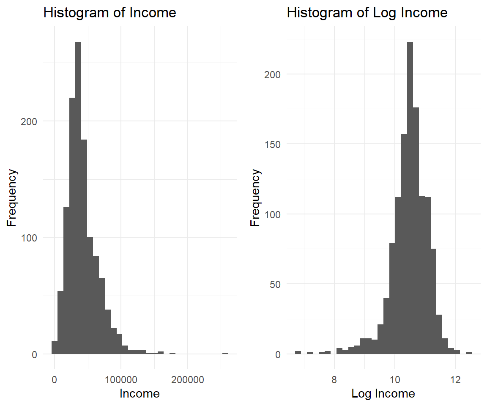

Chapter 11 Interaction Models
11.1 Motivation
A sports doctor routinely measures the muscle percentages of his clients. He also asks them how many hours per week they typically spend on training. Our doctor suspects that clients who train more are also more muscled. Furthermore, he thinks that the effect of training on muscularity declines with age. In multiple regression analysis, this is known as a moderation or interaction effect. The figure below illustrates it.

Imagine a 35 year old student and a 49 year old professor who work out at McFit (Lenne Passage). They exercise exactly the same amount of time per week (3 day split), the same exercises (McFit usually provides multiple identical machines next to each other), the same time of the day, they take the nutritional supplements, etc. etc. everything else is constant. Do you think they will experience different results in terms of muscle gains?
In mathematical terms the interaction is a multiplication:
\[ muscle = training + age + training*age \]
11.2 Load and Merge
We analyze the details of the weight-height relationship.
library(haven)
pequiv <- read_dta("./SOEPteaching/pequiv.dta", col_select = c("pid", "syear", "d11101", "d11102ll", "l11102", "d11104"))
health <- read_dta("./SOEPteaching/health.dta", col_select = c("pid", "syear", "height", "weight"))
pgen <- read_dta("./SOEPteaching/pgen.dta", col_select = c("pid", "syear", "pgnace", "pgnace2"))
master <- merge(pequiv, health, by = c("pid", "syear"))
master <- merge(master, pgen, by = c("pid", "syear"))11.3 Data Manipulation
Drop Stata labels, rename the variables, and create factor variables.
library(sjlabelled)
soep <- remove_all_labels(master)
library(tidyverse)
soep <- soep %>%
rename(region = l11102,
marital = d11104,
age = d11101,
gender = d11102ll) %>%
filter(height > 0, weight > 0, marital > 0) %>%
mutate(marital = factor(marital, levels = c(1, 2, 3, 4, 5)),
region = factor(region, levels = c(1, 2)),
gender = factor(gender, levels = c(1, 2)))
levels(soep$marital) = c("married", "single", "widowed", "divorced", "separated")
levels(soep$region) = c("west", "east")
levels(soep$gender) = c("male", "female")Inspect the data (check for missings and outliers):
library(gtsummary)
tbl_summary(soep[-c(1,2)])| Characteristic | N = 103,9501 |
|---|---|
| gender | |
| male | 49,646 (48%) |
| female | 54,304 (52%) |
| age | 47 (35, 62) |
| marital | |
| married | 61,332 (59%) |
| single | 25,921 (25%) |
| widowed | 6,205 (6.0%) |
| divorced | 8,010 (7.7%) |
| separated | 2,482 (2.4%) |
| region | |
| west | 80,387 (77%) |
| east | 23,563 (23%) |
| height | 171 (165, 178) |
| weight | 75 (65, 86) |
| pgnace | 15 (-2, 64) |
| pgnace2 | -2 (-2, -2) |
| 1 n (%); Median (IQR) | |
11.4 Simple linear model
You learned that simple regression is almost identical to correlation between two variables.
simple <- lm(weight ~ height, data=soep)
simple
#>
#> Call:
#> lm(formula = weight ~ height, data = soep)
#>
#> Coefficients:
#> (Intercept) height
#> -78.4362 0.903411.5 Multiple regression with control
11.5.1 Regression model
Here comes multiple regression. We have seen this before:
multiple <- lm(weight ~ height + gender, data=soep)
multiple
#>
#> Call:
#> lm(formula = weight ~ height + gender, data = soep)
#>
#> Coefficients:
#> (Intercept) height genderfemale
#> -37.567 0.684 -6.18811.5.2 Visualization (parallel slopes)
We have seen parallel slopes before:

Conclusion: The fundamental truth is that the effect of body height on body weight is identical across gender (i.e. for males and females). Males and female are equipped (by nature) with a different starting body weight on average.
11.6 Multiple regression with moderator
11.6.1 Interaction (dummy * dummy)
interact0a <- lm(weight ~ region*gender, data=soep)
summary(interact0a)
#>
#> Call:
#> lm(formula = weight ~ region * gender, data = soep)
#>
#> Residuals:
#> Min 1Q Median 3Q Max
#> -54.401 -9.987 -2.183 7.599 165.599
#>
#> Coefficients:
#> Estimate Std. Error t value Pr(>|t|)
#> (Intercept) 84.40098 0.07542 1119.145 < 0.0000000000000002 ***
#> regioneast -0.41388 0.15848 -2.612 0.00901 **
#> genderfemale -15.21763 0.10435 -145.826 < 0.0000000000000002 ***
#> regioneast:genderfemale 1.50228 0.21919 6.854 0.00000000000724 ***
#> ---
#> Signif. codes: 0 '***' 0.001 '**' 0.01 '*' 0.05 '.' 0.1 ' ' 1
#>
#> Residual standard error: 14.78 on 103946 degrees of freedom
#> Multiple R-squared: 0.2022, Adjusted R-squared: 0.2021
#> F-statistic: 8780 on 3 and 103946 DF, p-value: < 0.00000000000000022First glimpse at the margins package.
library(margins)
#margins(interact0a)
summary(margins(interact0a, at = list(region = c("west", "east"))))
#> factor region AME SE z p lower upper
#> genderfemale 1.0000 -15.2176 0.1044 -145.8260 0.0000 -15.4222 -15.0131
#> genderfemale 2.0000 -13.7153 0.1928 -71.1532 0.0000 -14.0931 -13.3376
#> regioneast 1.0000 0.3709 0.1095 3.3879 0.0007 0.1563 0.5855
#> regioneast 2.0000 0.3709 0.1095 3.3879 0.0007 0.1563 0.5855Interaction plot from the interactions package.
# Dedicated package makes everything easier.
library(interactions)
cat_plot(interact0a, pred = gender, modx = region)
11.6.2 Interaction (categorical * dummy)
interact0b <- lm(weight ~ marital*gender, data=soep)
interact0b
#>
#> Call:
#> lm(formula = weight ~ marital * gender, data = soep)
#>
#> Coefficients:
#> (Intercept) maritalsingle
#> 85.92239 -5.38961
#> maritalwidowed maritaldivorced
#> -4.34815 -0.08313
#> maritalseparated genderfemale
#> -1.25931 -15.50285
#> maritalsingle:genderfemale maritalwidowed:genderfemale
#> 0.77077 4.85503
#> maritaldivorced:genderfemale maritalseparated:genderfemale
#> 0.44475 1.1325911.6.3 Interaction (continuous * dummy)
Note that R automatically adds main effects if you use multiplication operator:
Thus \[ height * female \]
translates to
\[ height + female + height*female \]
interact1 <- lm(weight ~ height*gender, data=soep)
interact1
#>
#> Call:
#> lm(formula = weight ~ height * gender, data = soep)
#>
#> Coefficients:
#> (Intercept) height genderfemale
#> -58.7988 0.8031 37.5708
#> height:genderfemale
#> -0.255311.6.4 Visualization (non-parallel slopes)
library(interactions)
interact_plot(interact1, pred = height, modx = gender,
main.title = "Each group has a different slope.")
Conclusion: The fundamental truth is that the effect of body height on body weight is similar but not identical between males and females. A boy and and girl of exact same body height who experience growth by 1cm are expected to end up with different weight gains. There is effect heterogeneity.
11.6.5 Interaction (continuous * continuous)
interact2 <- lm(weight ~ height*age, data=soep)
interact2
#>
#> Call:
#> lm(formula = weight ~ height * age, data = soep)
#>
#> Coefficients:
#> (Intercept) height age height:age
#> -80.661777 0.861444 -0.213555 0.002397The interaction of two continuous variables is harder to interpret. We cannot set the moderator (age) equal to zero, since there is no person with an age of zero (in SOEP).
11.6.6 Visualization (non-parallel slopes)
There are conventions to help you choose the best values of the continuous moderator for plotting predicted values. But these conventions don't always work in every situation. For example, one convention suggested by Cohen and Cohen and popularized by Aiken and West is to use three values of the moderator: the mean, the value one standard deviation above, and the value one standard deviation below the mean. This is what interact_plot() does by default.
interact_plot(interact2, pred = height, modx = age)
This shows you that interaction between two continuous variables works basically the same way as for a categorical and continuous variable. An interaction says that there's not a fixed offset: you need to consider both values of x1 and x2 simultaneously in order to predict y.
You can see that even with just two continuous variables, coming up with good visualizations are hard. But that's reasonable: you shouldn't expect it will be easy to understand how three or more variables simultaneously interact! But again, we're saved a little because we're using models for exploration, and you can gradually build up your model over time. The model doesn't have to be perfect, it just has to help you reveal a little more about your data.
Conclusion: The fundamental truth is that the effect of body height on body weight is identical across age. In the regression output age has non-significant coefficients. The interaction plot is suggesting that there is no effect heterogeneity with respect to age (multiple parallel slopes).
11.7 Marginal Effects
Now we better understand that the effect of our main explanatory variable might be increased or decreased by another variable. Still, a question is open to answer: What exactly is the effect of our main explanatory variable in the interaction model?
In OLS framework regression coefficients have direct interpretation as unconditional marginal effects: predicted change in y due to a unit change in x. Interactions or higher-order terms (e.g. age square) make interpretation difficult or impossible. For interpretation of the effect and the statistical significance, we have to investigate all interacted variables at the same time. Marginal effects are partial derivatives of the regression equation with respect to a variable from the model.
\[ \begin{align} weight &= \beta_0 + \beta_1 \cdot height \tag{simple regression} \\ \frac{\partial weight}{\partial height} &= \beta_1 \tag{unconditional effect} \\ weight &= \beta_0 + \beta_1 \cdot height + \beta_2 \cdot female + \beta_3 \cdot height \cdot female \tag{moderated regression} \\ \frac{\partial weight}{\partial height} &= \beta_1 + \beta_3 \cdot female \tag{conditional effect} \\ \end{align} \]
library(stargazer)
stargazer(simple, interact1, type="text")
#>
#> =================================================================================
#> Dependent variable:
#> -------------------------------------------------------------
#> weight
#> (1) (2)
#> ---------------------------------------------------------------------------------
#> height 0.903*** 0.803***
#> (0.005) (0.008)
#>
#> genderfemale 37.571***
#> (2.125)
#>
#> height:genderfemale -0.255***
#> (0.012)
#>
#> Constant -78.436*** -58.799***
#> (0.799) (1.508)
#>
#> ---------------------------------------------------------------------------------
#> Observations 103,950 103,950
#> R2 0.267 0.289
#> Adjusted R2 0.266 0.289
#> Residual Std. Error 14.170 (df = 103948) 13.955 (df = 103946)
#> F Statistic 37,767.980*** (df = 1; 103948) 14,056.330*** (df = 3; 103946)
#> =================================================================================
#> Note: *p<0.1; **p<0.05; ***p<0.01For the simple regression, the coefficient is identical (unconditional).
library(margins)
margins(simple)
#> height
#> 0.903411.7.1 Marginal effects at representatives (TASK)
We can use representative values which we literally plug in the equation. These are the effects for each group (what we have seen before in the interaction plot):
\[ \begin{align} weight &= \beta_0 + \beta_1 \cdot height + \beta_2 \cdot female + \beta_3 \cdot height \cdot female \tag{interact1} \\ \frac{\partial weight}{\partial height} &= \beta_1 + \beta_3 \cdot female \tag{conditional effect} \\ \end{align} \]
Here is the R code:
margins(interact1, at = list(gender = c("male", "female")))
#> at(gender) height genderfemale
#> male 0.8031 -6.224
#> female 0.5479 -6.224Please calculate the MER of height in interact1 for the two gender programmtic in R.
11.7.2 Marginal effects at the mean (TASK)
Plugging in values is not always as easy as it seems to be. What should we use for age? Values as 0, 1 or 2 does not makes sense for age. Okay, we could use some representative age, e.g. 30 and 40. But what is our theoretical justification to report the effect for age 30 and not age 31? Another strategy is to use mean values of the variables.
\[ \begin{align} weight &= \beta_0 + \beta_1 \cdot height + \beta_2 \cdot age + \beta_3 \cdot height \cdot age \tag{interact2} \\ \frac{\partial weight}{\partial height} &= \beta_1 + \beta_3 \cdot age \tag{conditional effect} \\ \end{align} \]
library("stargazer")
stargazer(simple, interact2, type="text")
#>
#> =================================================================================
#> Dependent variable:
#> -------------------------------------------------------------
#> weight
#> (1) (2)
#> ---------------------------------------------------------------------------------
#> height 0.903*** 0.861***
#> (0.005) (0.013)
#>
#> age -0.214***
#> (0.044)
#>
#> height:age 0.002***
#> (0.0003)
#>
#> Constant -78.436*** -80.662***
#> (0.799) (2.214)
#>
#> ---------------------------------------------------------------------------------
#> Observations 103,950 103,950
#> R2 0.267 0.309
#> Adjusted R2 0.266 0.309
#> Residual Std. Error 14.170 (df = 103948) 13.751 (df = 103946)
#> F Statistic 37,767.980*** (df = 1; 103948) 15,516.970*** (df = 3; 103946)
#> =================================================================================
#> Note: *p<0.1; **p<0.05; ***p<0.01Here is the R code with margins:
interact2 <- lm(weight ~ height*age, data=soep)
interact2
#>
#> Call:
#> lm(formula = weight ~ height * age, data = soep)
#>
#> Coefficients:
#> (Intercept) height age height:age
#> -80.661777 0.861444 -0.213555 0.002397
#summary(margins(interact2))
margins(interact2, at = list(age = mean_age))
#> at(age) height age
#> 48.05 0.9766 0.1977Please calculate the MEM of height in interact2 programmtic in R.
11.7.3 Average marginal effects
The default margins commands shows you something else than MER and MEM, namely average marginal effects. AMEs calculate marginal effects at every observed value of X and average across the resulting effect estimates. AMEs are particularly useful because -- unlike MEMs -- produce a single quantity summary that reflects the full distribution of X rather than an arbitrary prediction.
margins(interact1)
#> height genderfemale
#> 0.6698 -6.224A summary provides you with information that cannot easily be calculated by hand, e.g. standard error, p-value, confidence interval:
summary(margins(interact1))
#> factor AME SE z p lower upper
#> genderfemale -6.2236 0.1169 -53.2405 0.0000 -6.4527 -5.9945
#> height 0.6698 0.0062 107.8003 0.0000 0.6576 0.6820